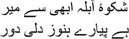
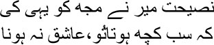
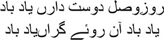
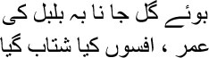

9

Already weeping over your scar, Mir?
It’s still a long way to Dilli, friend
 entered Shahjahanabad with the voices of ill-fated spirits ringing in my ears, Manto bhai. Everyone referred to it as Dilli, but I liked using the name Shahjahanabad; some names have a certain fragrance attached to them, don’t they? A fragrance like Jahangiri Ittar. Haven’t you heard of it? But then, how many people know all this? Jahanpanah Jahangir used to claim that ittar was invented during his reign. All these are the whims of kings and queens. But do you know who distilled this ittar? It was Begum Noorjehan’s mother Asmat Begum. Jahangir was filled with regret at the fact that his father, Jahanpanah Akbar, had had to go to his grave without experiencing the fragrance of this ittar. Emperor Akbar! He was like the front door to heaven, Manto bhai. I don’t know how much of this is true—I got it from highly-placed people in Dilli—the foam that would gather on the surface of the water when Asmat Begum made rosewater would be collected, a little bit at a time, in an ittar vial. This was how Jahangiri Ittar was born. It was said that a drop of this ittar could make a garden bloom with a gathering of thousands. Such was its fragrance that even lost souls came back, attracted by its scent.
entered Shahjahanabad with the voices of ill-fated spirits ringing in my ears, Manto bhai. Everyone referred to it as Dilli, but I liked using the name Shahjahanabad; some names have a certain fragrance attached to them, don’t they? A fragrance like Jahangiri Ittar. Haven’t you heard of it? But then, how many people know all this? Jahanpanah Jahangir used to claim that ittar was invented during his reign. All these are the whims of kings and queens. But do you know who distilled this ittar? It was Begum Noorjehan’s mother Asmat Begum. Jahangir was filled with regret at the fact that his father, Jahanpanah Akbar, had had to go to his grave without experiencing the fragrance of this ittar. Emperor Akbar! He was like the front door to heaven, Manto bhai. I don’t know how much of this is true—I got it from highly-placed people in Dilli—the foam that would gather on the surface of the water when Asmat Begum made rosewater would be collected, a little bit at a time, in an ittar vial. This was how Jahangiri Ittar was born. It was said that a drop of this ittar could make a garden bloom with a gathering of thousands. Such was its fragrance that even lost souls came back, attracted by its scent.
I came to Dilli like a lost soul too. Or was it like a dream— what do you say? What was my life, after all? Nothing but a dream, although I was at least a flesh and blood human being. Wasn’t I? I was Allah’s dream—no, not a dream but a nightmare. Do you know why he had this nightmare? He knew that I would bring poetry to this world, and through this poetry each of you would walk across halls of mirrors. And you would see how your reality was changing. My existence would be scattered like dust on the floors of the halls of mirrors. The dust from which Allah made man.
How we drift from one subject to another! I was telling all of you about my arrival in Shahjahanabad, wasn’t I? Yes, that’s what I was saying, for how else would we have been talking of fragrances? The universe of words is remarkable, you know. I was talking of the voice of ill-fated spirits ringing in my ears during my journey to Shahjahanabad, and that’s what brought me to the subject of perfume. Souls are fragrances, each of them. But you will not find any of these fragrances in the perfumeries of Mughal emperors. These fragrances are made by Allah. The Creator gives each soul a different fragrance. Some of them match the perfumes made in this world. That is why these fragrances are to be found in heaven as well as on earth. Something is wrong, Manto bhai. When I’m trying to tell you about my arrival in Shahjahanabad, why am I reminded repeatedly of my days in Agra? Mir sahib said long ago:

Since the subject of love has come up, and since Mir sahib himself has said, be whatever you want to be, but never a lover, I might as well tell you the story of how he lost his heart. I might forget, and never get a chance to tell this story, so gustakhi maaf, I want to use this opportunity to recount Mir sahib’s agony. Why not let our conversation continue this way, my very own brothers in hell, forward and backward and losing our way, like a succession of waves that cannot be told apart? What is it, why are all of you sitting up? Why is there a dark shadow on your faces? What is it, Manto bhai? Did I say something wrong? I have measured out my entire life in mistakes. Umrao Begum had asked me once, ‘Aap kaun hain, Mirza sahib, who are you?’
— Meaning?
— Who are you?
I had burst out laughing. —A dot, Begum, I am but a dot.
— A dot?
A dot—a drop—no one can tell, Manto bhai, when or where it will appear, or when and in which direction it will be stretched into a line. But why do all of you stare at me like this? All right, give me a moment to reflect, let me think it over, I’m sure I will find out where I went wrong, what my mistake was, just give me a little time …
Yes, I must talk about my arrival in Shahjahanabad first. They spoke to me a minute ago, those same spirits whose voices I had heard on my way to Dilli. If you don’t talk about us first, no one will listen to you, you idiot, they told me.
— Why not?
— Because the first thing that people want to hear about is what lies deep in the earth. And it’s we who are resting in those depths …
— Where do you rest?
— Under Dilli. Talk about us first. This city stands on the foundation of our flesh and blood. Everyone knows of Mir sahib. But we are unknown, if you do not talk about us, who will? Who were the ones to talk to you when you came to Shahjahanabad? Who knew you then, Asad? It was we who spoke to you.
I will talk about them now, stay alert and listen closely. This is a city whose story is told in regret—it was born of sorrow, it died of sorrow. I have seen this death, Manto bhai, I will recount every bit of what I saw. I must. For this city is my flesh and my bones. I’m not exaggerating, Chandni Chowk was my backbone, the Qila-e-Mualla, the Red Fort, was my misshapen skull. And my heart? That was Jama Masjid, you understand that, don’t you? The Qila-e-Mualla faced west, towards Mecca. Chandni Chowk was to the west, and Jama Masjid faced west too. The doors to the city were like the world itself. The gateways were actually the four entrances to heaven. It was in the courtyard of the Jama Masjid that I first heard Khwaja Moinuddin Chishti tell stories. Do you know what the Khwaja said? ‘Whose face is that in the mirror? What beauty is this that has let itself be captured in the frame of my soul? Who has adorned the universe? Who is reflected in each and every atom? Who fills all the grains of sand with light? I can see the flesh, but who is concealed in the marrow? Who sings for the peace of the spirit? He sees himself, loves himself. Who is he? Who is he?’ He is Garib Nawaz. The friend of the hungry people.’
The day I arrived in Shahjahanabad, those who came up to me were the ones whom history doesn’t write about, Manto bhai. They had been buried alive in order to build Shahjahanabad. Let me tell you this story from the beginning, then. Although I cannot tell even now where it begins and where it ends. I am that ancient tree, you know, which has survived for thousands of years, which no one ever tries to hack with an axe because it is of no use to anyone. I just keep standing, forever. It seems to me that my head is actually where the roots are, shooting upwards through the sky towards an unknown place, no, certainly not towards heaven, and my feet are sunk in the flames of hell. Still I had told Allah:
I am now deprived even of cruelty, oh God
Such enmity towards your devoted lover!
As I was saying, as you know, before Shahjahanabad, the Mughals had their capital in Akbarabad, or Agra. Jahanpanah Akbar went to Agra in 1558. Are you really going to enjoy history lessons now? There are plenty of history books for that purpose. King Bahadur Shah had assigned me the task of writing a history of the Mughals; I couldn’t progress beyond the first volume. I grew up listening to stories, Manto bhai, could history possibly show me the way to heaven? On the contrary, we have been burnt to cinders in the hell of history ever since 1857.
Still, I must tell you a thing or two about Agra. The first love of my life is mingled in its dust. The current of the Yamuna used to talk to me. I used to roam about in Chaharbagh and in Moti Mahal. The Bulandbagh was situated right next to Zafar Khan’s memorial; it was an extraordinary garden. To tell the truth, Manto bhai, Agra was a city of gardens. And it had innumerable taverns, sarais. The one next to the Taj Mahal, named the Taj-e-Mukaam, was where we would gather every day. You could say the Taj-e-Mukaam was our garden of stories. Every story was succeeded by another; gusts of laughter rose skywards like a swarm of kites. It was there that I heard the story of Mir Sauda. I had never considered Sauda much of a poet, but one had to admit his skills when it came to writing qaseedas. There was something rather amusing that Sauda used to say, though all this was hearsay, for I had never seen him. Apparently he used to say, ‘It’s true I’m no flower in the garden, but then nor am I a thorn in anyone’s flesh.’ I might as well tell the story. Sauda wrote this amusing tale about Mir Hasan’s father Mir Zahid. Food made Mir Zahid forget everything else in the world. There wasn’t anything in the universe that couldn’t yield something for him to eat. You’ll roll with laughter when you hear the story, Manto bhai. One day, Mir Zahid was staring open-mouthed at his Begum’s angia. You know what an angia is, don’t you—underclothes to cover the breasts. The Begum was astonished; how brazen he was, why was a man gaping at her angia this way?
Embarrassed, she asked, ‘Anything wrong, janab?’
— No.
— Then why are you …
— I’m looking, Begum.
— At what?
— What’s inside the angia, Begum?
— What can there possibly be, janab?
Pouncing on her and cupping her breasts, Mir Zahid shouted, ‘Roti hai, Begum, we have rotis here, as soft as velvet.’
— Ya Allah, ejaculated the Begum, about to faint. On other days, he would insert his hand into her petticoat and ask, ‘What’s in here, Begum? So soft, and yet so warm. This is a freshly baked roti, Begum. Why are you hiding it from me? Give it to me Begum—this roti has a special taste.’ Ha ha ha, Manto bhai, just imagine the conversation at the inn. So many people passed through the city every day—familiar faces and strangers—there were more people in Akbarabad than in London at the time. This was Akbarabad, a tapestry woven with coloured threads—no, why call it that, it was more like a portrait gallery, where we had been painted with God’s own brush. I am reminded of Hafiz sahib’s sher, Manto bhai:

I still remember those days, when our friendship
Brought us together, do you still remember those days?
In 1637 Emperor Shahjahan went away to Dilli. Agra’s portrait gallery collapsed. As Mir sahib had written:

The fragrance of the rose, the song of the nightingale,
And my life—how quickly all of them ended
Then began the work of building Shahjahanabad. Emperor Shahjahan had asked for a site to be identified somewhere between Agra and Lahore. This spot by the Yamuna was finalized for the purpose. You do know that a horoscope was drawn up for the city? Astrologers had determined the correct moment to begin. Construction was started on May 12, 1639. The story I’m about to tell you, Manto bhai, is the story of the beginning before this beginning. How a city gradually grows on a foundation of the dead, the same dead people whose spirits had surrounded me that night.
I was standing before the Qila-e-Mualla after my arrival in Dilli. There was no moon in the sky; the fortress appeared to be a gigantic ghost. And I felt people gathering around me, their breaths rank with the stench of rotting flesh.
— Asad. Someone called out to me.
I looked around but couldn’t see anyone. I had arrived in Dilli very recently, who could possibly know me hereabouts?
— Who are you, I asked apprehensively.
— Qutub.
— But I don’t know you. Where are you? Why can’t I see you?
— We cannot be seen, Asad.
— Why?
— They have wiped us out.
— Who?
— Those who are building Shahjahanabad. They had handpicked us.
— And then?
— They killed and buried the whole lot of us. It’s on that ground that Shahjahanabad stands today.
— Why were all of you killed?
— I didn’t want to give them an inch of my land. So they got rid of me. There can be no greater crime against the emperor, they said. They branded me a vile criminal, keeping me imprisoned in an airless gaol for days on end.
— Asad bhai …
— Who are you?
— I am Yusuf.
— What did you do?
— I merely set eyes on her.
— On whom?
— I don’t even know her name. She was standing in the balcony of the haveli. I only saw her eyes above her veil. Do you know what those eyes were like, Asad bhai? Like a pair of nightingales. I used to visit the haveli every day to see those nightingales. But I never saw them again. Still they took me away in chains and forced me inside a dark pit. And then one day …
— You went to your grave too, Yusuf?
— Yes.
— Didn’t anyone protest?
— Who would raise his voice? Love is profane, love is hell. Who would say a word, Asad bhai? We don’t have love in our lives, do we?
— And I just used to wander around the streets.
— Who are you?
— Hasan. Why did I wander around, Asad?
— Why?
— In search of dust.
— Dust? Why? What dust?
— The dust with which Allah had made Adam. Someone or the other must search for it, mustn’t he?
— And so they took you away?
— They said, you’re looking for dust? You want to create Adam from dust? You want to be Allah? The maulvis tore my clothes off. They stoned me to death. I didn’t say anything to them, Asad bhai. I stood up to them fearlessly. Beat me as much as you can, pluck my eyes out, cleave my flesh from my body. Even in heaven I will search for dust. What will you do to me then? I shouted, beat me as much as you can, stone me as much as you can, I am Al-Hallaj. They had stoned Al-Hallaj too, hadn’t they? Al-Hallaj had said, I am Allah, it’s no one else but me. I had only wanted to create Adam from dust, Asad bhai. Does this make me a hypocrite, a munafiq?
All night I listened to these spirits, Manto bhai, who had been proven guilty on one pretext or another, and then killed and buried. The foundations of Shahjahanabad were built on the earth covering their graves. I had gone to Dilli with the dream of being a famous shair. On hearing my ghazals at mushairas, wealthy people would exclaim, ‘kyabaat, kyabaat, marhaba, marhaba!’ But what city of wandering spirits had I arrived at instead? All night long I listened to the stories of their lives. None of them was a criminal, but they were branded that way. Because, to build a city, it was necessary to find criminals to kill and bury without reason. Sadiq mian’s spirit had once asked me, ‘You plan to write ghazals, Asad sahib?’
— I’m not good for anything else, mian.
— Aren’t you going to write about spirits like us?
— I will.
— No one will understand your ghazals in that case Asad sahib. Sadiq had laughed.
— Why?
— They will only get the stench of death.
— Do you know what will happen after that? Sadiq mian asked, laughing.
— What?
— You will die like a street dog.
The spirits were absolutely right, Manto bhai. But even if I was a street dog, I was handsome once. Some people even used to want me. Mughaljaan, Munirabai and the other girls used to love me. Then, one day, I saw that I was turning mangy, I had become infested with worms. All my fur fell off eventually, leaving only a few bones beneath the roasted skin. Sprawled in the diwankhana, I would stare at this bundle of bones endlessly before the sheer fatigue of the activity made me drop off. And I would dream that Dilli was disintegrating, turning into crumbling sand, just sand; I was sinking beneath the dunes in the desert. Just think of the number of ancient spirits whose hands I took to arrive in Dilli, Manto bhai.